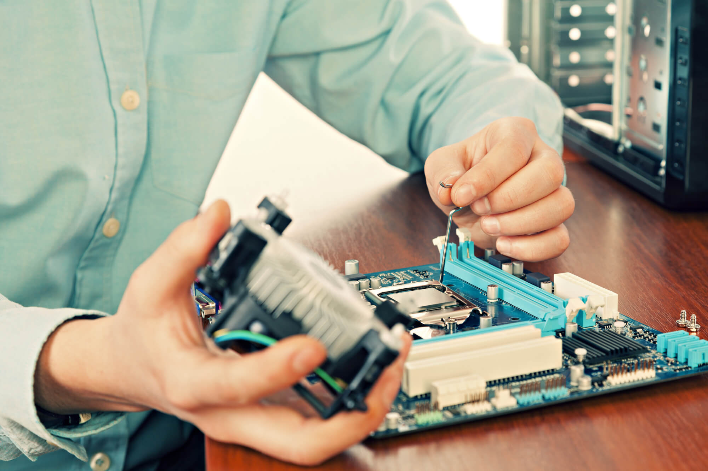
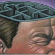
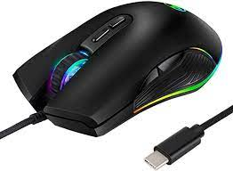
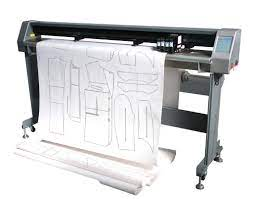

componentes interno
nterno é aquele que faz parte da estrutura do seu dispositivo, como processador e memória RAM
processador e memória RAM,
1.1.1 CPU
CPU é a sigla em inglês para Unidade Central de Processamento, o componente do computador que concentra todas as principais operações que permitem a seu PC, celular, tablet ou videogame a funcionar. Não é exagero, portanto, se referir à CPU como o “cérebro” desses dispositivos.
Armazenamento
Armazenamento também é a tradução de storage, termo em inglês que descreve espaços como self-storages, embalagens para guardar objetos ou sistemas para armazenar dados de computadores, celulares e outros dispositivos.
hd,sdd

Memória
é um termo que se refere a uma capacidade mental, cuja função é codificar, armazenar e recuperar informações
sentimentos, acontecimentos, imagens, ideias, etc
Fonte de alimentação
Fonte de alimentação é utilizada para fornecer energia à carga elétrica. Portanto, é um dispositivo elétrico que fornece energia ao circuito
bateria, gerador ou tomada
Componentes externos
são os periféricos utilizados para que o usuário consiga interagir com a máquina:
monitor, teclado, Mouse, caixas de som, impressora...
teclado
Na computação, o teclado de computador é um dispositivo que possui uma série de botões ou teclas, utilizado para inserir dados no computador.

Monitor de vídeo
transmitir o que está sendo realizado no computador, seja através do movimento dos olhos ou do seu corpo, para que assim você possa perceber todos os dados que estão sendo requisitados.

Mouse
É um dispositivo de mão que controla o movimento de um ponteiro na tela (normalmente a imagem de uma seta).
1) Mouse óptico. ... 2) Mouse laser. ... 3) Mouse ergonômico. ... 4) Mouse gamer. ...
impressora
Impressora ou dispositivo de impressão é um periférico que, quando conectado a um computador ou a uma rede de computadores, tem a função de dispositivo de ..
Impressora de impacto · Impressora térmica · Impressora a laser
plotter
plotter ou Lutther é uma impressora destinada a imprimir desenhos em grandes dimensões, com elevada qualidade e rigor, como por exemplo mapas ..
Plotter. Existem dois tipos de plotter, os de corte e os de impressão. O plotter de corte apenas recorta os desenhos em papéis especiais, muito úteis para criar adesivos, por exemplo. Os plotter de impressão, por sua vez, trabalham com impressões em grande escala e alta qualidade.
Scanner
é um periférico de entrada responsável por digitalizar imagens, fotos e textos impressos para o computador, um processo inverso ao da impressora. Ele faz varreduras na imagem física por meio de leitura óptica, gerando impulsos elétricos através de um captador de reflexos.
impressora.
gabinete
O gabinete é o componente de hardware usado para alocar a maioria das peças de um computador. É dentro dele que são colocados componentes como ...
exemplo de gabinetes vertical horizontal
Web cam
é uma câmera de vídeo de baixo custo que capta imagens e que as transfere para um computador.
exemploa camera do notbuk

caixa de som
Seu objetivo principal é gravar e reproduzir o som por meio de um cilindro. Este é o primeiro dispositivo capaz de gravar e reproduzir som
Caixa ativa e caixa passiva. ... Caixa simples. ... Bafflee infinito (defletor) ... Caixa fechada (closed box) ... Bass-reflex (refletor de graves) ... Caixa band pass (caixa passa-banda) ... Caixa cornetas (horn loaded) ... Coaxial.

Microfone
um dispositivo que converte som em um sinal elétrico.
Microfones dinâmicos (Dynamic Microphones) Microfones condensadores de cápsula larga (Large Diaphragm Condenser Microphone) Microfones condensadores de cápsula pequena (Small Diaphragm Condenser Microphone) Microfones de fita (Ribbon Microphones)
head set
Headset é um conjunto de fone de ouvido com controle de volume e microfone acoplado para uso em microcomputadores multimídia e também para telemarketing
headphone

Interfaces de entrada e saída
são responsáveis pela conexão entre as várias partes de um sistema computacional baseado na arquitetura de Von-Neumann.
entrada teclado e de saida impressora
interfaces sem fio
a comunicação de dados é realizada por meio de ondas eletromagnéticas, como frequências de rádio, infravermelho e satélite, ao invés de cabos e fios
telefone sem fio

áudio
O áudio, finalmente, é um elemento de composição que alude ao som e ao ato de ouvir
uma musica
rede(ethernet)
Ethernet é um protocolo de conexão que gerencia como os dispositivos e computadores se comunicam em uma rede local (LAN).
NORMA SIGLA PADRÃO
VGA
VGA é a sigla para Video Graphics Array (ou Matriz Gráfica para Vídeo, em português), que identifica o padrão para displays gráficos desenvolvido pela IBM em ...
exporta um sinal analogico
HDMI
O HDMI é um padrão de conexão de dispositivos desenvolvido especificamente para transmissão
TVs, consoles de videogame, monitores, aparelhos de som e etc.
USB
um tipo de tecnologia que permite a conexão de periféricos sem a necessidade de desligar o computador, além de transmitir e armazenar dados.